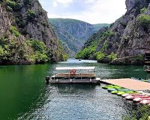

História da macedônia
"Localizada no interior da montanhosa península Balcânica, a Macedônia limita-se com a Sérvia (a noroeste), Bulgária (a leste), Grécia (ao sul) e Albânia (a oeste), seu território não possui saída para o mar. A Macedônia é uma das ex-repúblicas da Iugoslávia, cuja independência foi obtida no dia 17 de setembro de 1991. O processo de independência ocorreu de forma pacífica, diferentemente dos outros países dessa região. A Bulgária foi o primeiro país a reconhecer a Macedônia como nação independente."
Referencia de Mercedonia
A Macedônia, localizada na península Balcânica, é um país rico em belezas naturais. Aqui estão algumas das principais referências naturais do país: Parque Nacional de Mavrovo: Este é o maior parque nacional da Macedônia, cobrindo uma área de 73.088 hectares. O parque é conhecido por suas montanhas, lagos artificiais, cavernas pitorescas e o deslumbrante cânion do rio Radika1. Parque Nacional de Pelister: Localizado na montanha Baba, este parque é famoso por sua flora e fauna diversificadas, incluindo o pinheiro de cinco agulhas, uma espécie única da era Cenozóica. O parque também é um popular destino de esqui e oferece vistas panorâmicas do vale de Pelagonia e do lago Prespa1. Parque Nacional de Galičica: Situado entre os lagos Ohrid e Prespa, este parque oferece trilhas para caminhadas com vistas espetaculares e uma rica biodiversidade. É um local ideal para os amantes da natureza e da aventura
Referência de Macedônia
A Macedônia, localizada na península Balcânica, é um país rico em belezas naturais. Aqui estão algumas das principais referências naturais do país: Parque Nacional de Mavrovo: Este é o maior parque nacional da Macedônia, cobrindo uma área de 73.088 hectares...